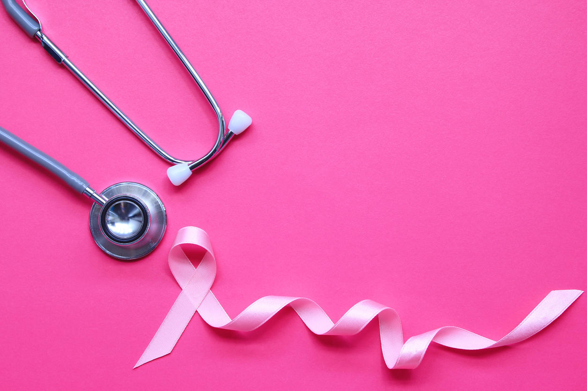

#Women's health issues

Breast Cancer:Two of the most common cancers affecting women are breast and cervical cancers. Detecting both these cancers early is key to keeping women alive and healthy. The latest global figures show that around half a million women die from cervical cancer and half a million from breast cancer each year.
Breast CancerRegular periods are a sign that your body is working normally. You should have regular periods unless you are pregnant, breastfeeding, postmenopausal, or have a medical condition that causes your periods to stop. Irregular, painful, or heavy periods may be signs of a serious health problem. Irregular periods also can make it harder to get Your doctor can work with you to help get your periods more regular....

Maternal health: Many women are now benefitting from massive improvements in care during pregnancy and childbirth introduced in the last century. But those benefits do not extend everywhere and in 2013, almost 300 000 women died from complications in pregnancy and childbirth. Most of these deaths could have been prevented, had access to family planning and to some quite basic services been in place....
Please click here for more!